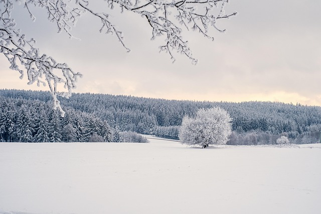
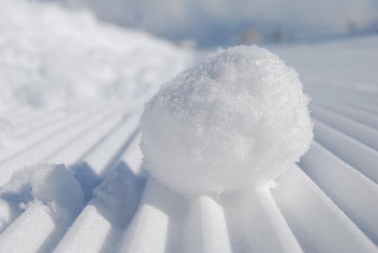
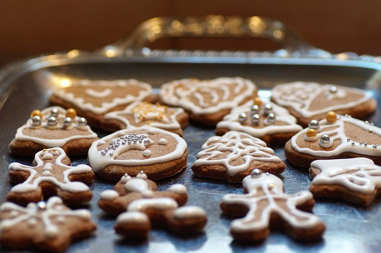

I love to look out from the windows of my bedroom and see the brightness of the snow reflecting off of the ground, trees, and the bright white sky. My other favorite thing about winter is how cold and brisk the air feels. Winter is a very cold season but the calmness of the scenery makes up for it. When there is a blizzard I get very excited because that will mean that there is probably no work or school and having a day off is fun.
When I was young my favorite thing to do in the snow was to go sledding, make snow angels, build a snowman, and have snowball fights. Now, I love being in the house with a warm cup of hot cocoa, snuggled in blankets, and watching Christmas movies. Winter gives off a cozy feeling and it is heartwarming. My favorite memories with my friends are out in the snow even though we were misserable of the cold. I always thought I had frostbite because of how long we were outside. We had to make winter fun, so that we were not bored.
My favorite winter desserts are pumpkin pie, apple pie, cinnamon rolls, sugar cookies, gingerbread cookies, and pumkin spice bars. Every year, my family and I gather together and make lots of cookies, frost them, and listen to Christmas music in the background. Eating lots of desserts is an excuse for me in the winter because Christmas is revolved around sweets.
